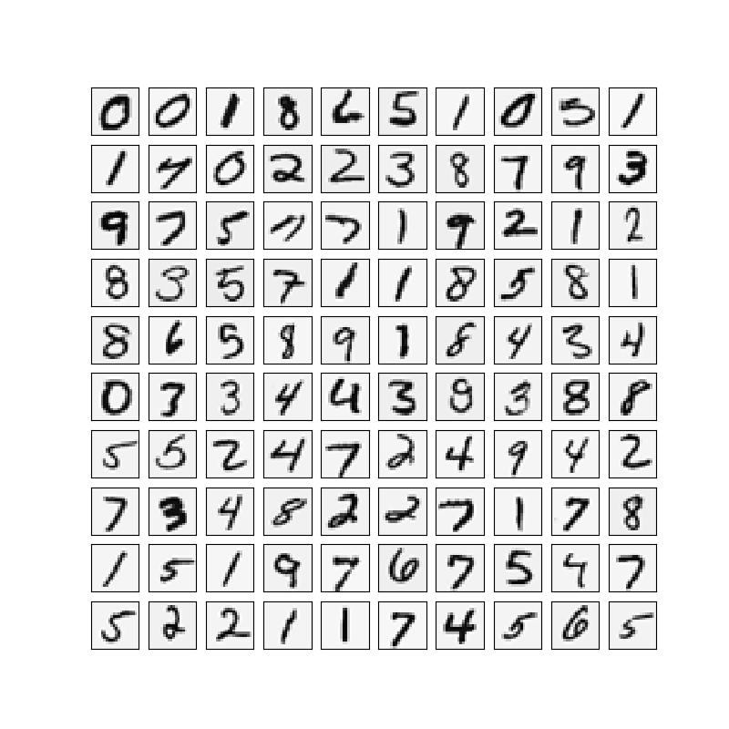

AndrewNg 机器学习习题ex3-neural network
ex3data1.mat是一个matlab文件，储存了5000个图像的数据，每个图像是一个20像素×20像素的灰度图，展开后为一个400维的向量，每一个向量都储存为矩阵X的行，所以X的维度是（5000，400）
y的每一行代表X所对应的手写数字，y的维度是（5000，1）
需要的头：1
2
3
4
5
6import matplotlib.pyplot as plt
import numpy as np
import scipy.io as sio
import matplotlib
import scipy.optimize as opt
from sklearn.metrics import classification_report # 这个包是评价报告
Visualizing the data
载入数据：1
2
3
4
5
6
7
8
9
10
11def load_data(path, transpose=True):
data = sio.loadmat(path)
y = data.get('y')
y = y.reshape(y.shape[0])
X = data.get('X')
if transpose:
X = np.array([im.reshape((20, 20)).T for im in X])
X = np.array([im.reshape(400) for im in X])
return X, y
X, y = load_data('./data/ex3data1.mat')
画一个图1
2
3
4
5
6
7
8
9
10def plot_an_image(image):
fig, ax = plt.subplots(figsize=(1, 1))
ax.matshow(image.reshape((20, 20)), cmap=matplotlib.cm.binary)
plt.xticks(np.array([]))
plt.yticks(np.array([]))
plt.show()
pick_one = np.random.randint(0, 5000)
plot_an_image(X[pick_one, :])
print('this should be {}'.format(y[pick_one]))
画一百个图1
2
3
4
5
6
7
8
9
10
11
12
13
14
15def plot_100_image(X):
size = int(np.sqrt(X.shape[1]))
sample_idx = np.random.choice(np.array(X.shape[0]), 100)
sample_images = X[sample_idx, :]
fig, ax_array = plt.subplots(nrows=10, ncols=10, sharey=True, sharex=True, figsize=(8, 8))
for r in range(10):
for c in range(10):
ax_array[r, c].matshow(sample_images[10 * r + c].reshape((size, size)), cmap=matplotlib.cm.binary)
plt.xticks(np.array([]))
plt.yticks(np.array([]))
plt.show()
plot_100_image(X)

准备数据
加载好ex3data1.mat文件后我们需要处理一下，首先X是一个(5000,400)的矩阵，我们在第一列加上一列全为1的矩阵为偏差量，y是一个(5000,)的矩阵，需要注意的是，为了兼容Oxtave和matlab，y中0的被标记为了10。我们把y分成10类整理y数据为(10,5000)的一个矩阵。
1 | 扩展 5000*1 到 5000*10 |
1 | raw_X, raw_y = load_data('./data/ex3data1.mat') |
训练一维模型
处理好数据后接着写，激活函数和代价函数，代价函数的偏导数就是梯度函数，我们期望这个函数最小。给梯度函数和代价函数加入正则项。
1 | def sigmoid(z): |
运用minimize()函数开始迭代，计算出theta，然后验证theta的准确性。
1 | def logistic_regression(X, y, l=1): |
最终求得结果为 Accuracy=0.9974
训练K维模型
1 | k_theta = np.array([logistic_regression(X, y[k]) for k in range(10)]) |
1 | precision recall f1-score support |
如ex3.pdf中所说，我们成功的分类出94%的例子。
Feedforward Propagation and Prediction

我们的神经网路如上图所示，它有3层构成（一个输入层，一个隐藏层a，一个输出层。）已经提供了一组训练参数（Θ1，Θ2）储存在ex3weights.mat中
1 | % Load saved matrices from file |
1 | def load_weight(path): |
1 | precision recall f1-score support |